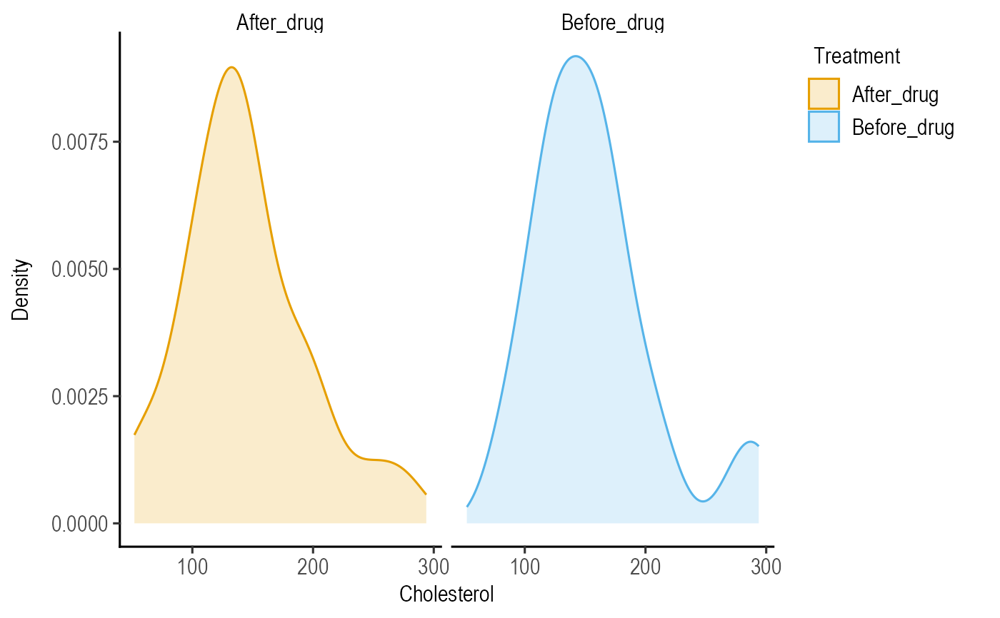

This function takes a data table, ycol of quantitative variable and a categorical grouping variable (group), if available, and plots a density graph using geom_density).
plot_density(
data,
ycol,
group,
linethick = 1,
c_alpha = 0.2,
ColPal = c("okabe_ito", "all_grafify", "bright", "contrast", "dark", "fishy",
"kelly", "light", "muted", "pale", "r4", "safe", "vibrant"),
ColSeq = TRUE,
ColRev = FALSE,
TextXAngle = 0,
fontsize = 20,
Group,
alpha,
...
)a data table e.g. data.frame or tibble.
name of the column containing the quantitative variable whose density distribution is to be plotted.
name of the column containing a categorical grouping variable
thickness of symbol border, default set to 1.
fractional opacity of filled colours under the curve, default set to 0.2 (i.e. 20% opacity).
grafify colour palette to apply, default "okabe_ito"; see graf_palettes for available palettes..
logical TRUE or FALSE. Default TRUE for sequential colours from chosen palette. Set to FALSE for distant colours, which will be applied using scale_fill_grafify2.
whether to reverse order of colour within the selected palette, default F (FALSE); can be set to T (TRUE).
orientation of text on X-axis; default 0 degrees. Change to 45 or 90 to remove overlapping text.
parameter of base_size of fonts in theme_classic, default set to size 20.
deprecated old argument for group; retained for backward compatibility.
deprecated old argument for c_alpha; retained for backward compatibility.
any additional arguments to pass to ggplot2geom_density.
This function returns a ggplot2 object of class "gg" and "ggplot".
Note that the function requires the quantitative Y variable first, and groups them based on an X variable. The group variable is mapped to the fill and colour aesthetics in geom_density.
Colours can be changed using ColPal, ColRev or ColSeq arguments. Colours available can be seen quickly with plot_grafify_palette.
ColPal can be one of the following: "okabe_ito", "dark", "light", "bright", "pale", "vibrant, "muted" or "contrast".
ColRev (logical TRUE/FALSE) decides whether colours are chosen from first-to-last or last-to-first from within the chosen palette.
ColSeq decides whether colours are picked by respecting the order in the palette or the most distant ones using colorRampPalette.
plot_density(data = data_t_pratio,
ycol = log(Cytokine), group = Genotype)
#with faceting
plot_density(data = data_cholesterol,
ycol = Cholesterol, group = Treatment,
fontsize = 10)+facet_wrap("Treatment")
